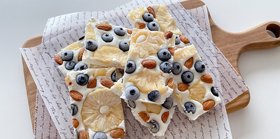

브랜드
인사말
브랜드스토리
언론
기사
협찬
메뉴
메뉴
인테리어
컨셉
설비
창업
가맹절차
가맹요금
매장
수도권
충청도
전라도
경상도
제주도
신선함
으로 가득한 맛,
건강을 담은
요거트
의 선택
Menu
요거트 아이스크림
요거트를 주 재료로 사용하여 만든
상쾌하고 부드러운 아이스크림입니다.
전통적인 아이스크림과는 달리 우유 대신
요거트를 사용하여 만들어집니다.
그릭 요거트
일반적인 요거트보다 더 진한 질감과
높은 단백질 함량을 가지고 있습니다.
그릭요거트는 우유를 발효시켜 만들어지며
과일이나 견과류, 꿀 등과 함께 섭취하면
풍부한 맛과 영양을 더할 수 있습니다.
지리산 벌집꿀+생과일
자연에서 직접 채취한 벌집꿀과
신선한 생과일을 같이 먹을수 있는 조합

요거트바크
얇게 퍼진 요거트를 냉동시켜 만든
간단하면서도 상쾌한 디저트입니다.
주로 요거트와 다양한 과일, 견과류,
꿀 또는 달콤한 시럽 등을 섞어 만듭니다.